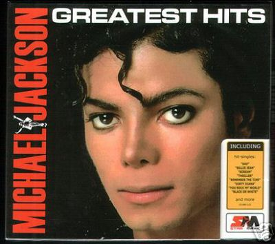

Pop music (a term that originally derives from an abbreviation of "popular") is usually understood to be commercially recorded music, often oriented towards a youth market, usually consisting of relatively short, simple songs utilizing technological innovations to produce new variations on existing themes. Pop music has absorbed influences from most other forms of popular music, but as a genre is particularly associated with the rock and roll and later rock style.
MIACHEL JACKSON is known to be the King of worldwide Pop music.. |  |